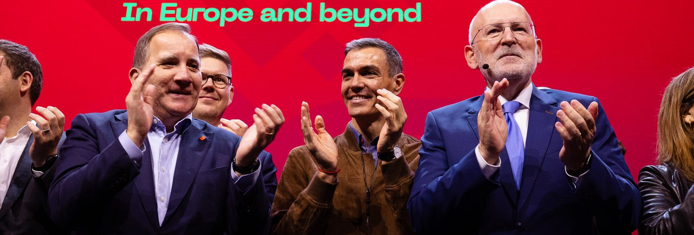

Cubrimos lo que el partido preferiría que no cubriéramos
Corrupción
Marzo 2026
Noviembre 2025
Mayo 2026
Investigados, imputados o condenados del entorno PSOE — actualizado 22 marzo 2026
Cantidades en millones de euros — fuentes públicas verificadas · marzo 2026
Organigrama resumido Ver organigrama completo →
Estadísticas que no aparecen en sus carteles electorales